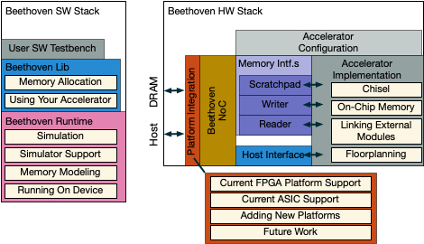

<map name="GraffleExport">
	<area shape="rect" coords="369,583,713,627" href="/Beethoven/Platform/Kria"/>
	<area shape="rect" coords="1019,369,1297,413" href="/Beethoven-Docs/Beethoven/HW/#platforms"/>
	<area shape="rect" coords="1019,136,1297,180" href="/Beethoven-Docs/Beethoven/HW/#configuration--build"/>
	<area shape="rect" coords="13,583,358,627" href="/Beethoven/Platform/AWSF"/>
	<area shape="rect" coords="13,508,358,552" href="/Beethoven-Docs/Beethoven/SW/#memory-modeling"/>
	<area shape="rect" coords="13,452,358,497" href="/Beethoven-Docs/Beethoven/SW/#building"/>
	<area shape="rect" coords="13,397,358,441" href="/Beethoven-Docs/Beethoven/SW/#building"/>
	<area shape="rect" coords="1019,436,1297,480" href="https://www.chisel-lang.org"/>
	<area shape="rect" coords="741,544,1236,588" href="/Beethoven/Platforms/NewPlatform"/>
	<area shape="rect" coords="13,230,358,274" href="/Beethoven-Docs/Beethoven/SW/#communicating-with-the-accelerator"/>
	<area shape="poly" coords="613,508,613,63,569,63,569,508,613,508" href="/Beethoven/HW/#platforms"/>
	<area shape="rect" coords="13,277,358,322" href="/Beethoven-Docs/Beethoven/SW/#allocating-memory"/>
	<area shape="rect" coords="1019,263,1297,341" href="/Beethoven-Docs/Beethoven/HW/Verilog"/>
	<area shape="rect" coords="1019,199,1297,244" href="/Beethoven-Docs/Beethoven/HW/#on-chip-memory-user-managed"/>
	<area shape="rect" coords="736,352,958,413" href="/Beethoven/HW/#on-chip-memory-scratchpad"/>
	<area shape="rect" coords="736,291,958,352" href="/Beethoven-Docs/Beethoven/HW/#memory-read-and-write-channels"/>
	<area shape="rect" coords="736,230,958,291" href="/Beethoven-Docs/Beethoven/HW/#memory-read-and-write-channels"/>
	<area shape="rect" coords="724,447,958,508" href="/Beethoven/HW/#host-interface"/>
	<area shape="rect" coords="2,119,352,180" href="/Beethoven/sw/#testbench"/>
	<area shape="rect" coords="2,180,369,341" href="/Beethoven-Docs/Beethoven/SW/#Beethoven-Library"/>
	<area shape="rect" coords="2,2,386,563" href="/Beethoven/SW"/>
	<area shape="rect" coords="724,169,958,447" href="/Beethoven-Docs/Beethoven/HW/#memory-read-and-write-channels"/>
	<area shape="rect" coords="724,63,1302,508" href="/Beethoven-Docs/Beethoven/HW"/>
	<area shape="rect" coords="502,2,1302,508" href="/Beethoven/HW"/>
</map>

